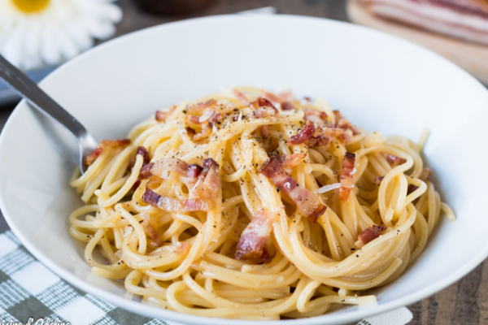

Pasta Carbonara

Description
Pasta Carbonara is a classic Italian dish originating from Rome, renowned for its creamy, savory flavor and simple ingredients. The dish typically features spaghetti or another type of pasta, tossed in a rich sauce made from eggs, grated Pecorino Romano cheese, and freshly ground black pepper. The sauce is given depth with the addition of guanciale, a cured Italian pork cheek or jowl, which is sautéed until crispy, adding a salty, umami-rich component to the dish. When the hot pasta is combined with the egg mixture, the heat gently cooks the eggs, creating a silky, glossy coating on the noodles without scrambling them. The balance of creamy sauce, sharp cheese, peppery notes, and savory pork makes Carbonara a comforting and indulgent dish that highlights the beauty of simple, high-quality ingredients.
Ingredients
(For 4 servings)
- 400g (14 oz) spaghetti or your preferred pasta
- 150g (5 oz) guanciale or pancetta, diced (you can substitute with bacon if needed)
- 3 large eggs
- 1 large egg yolk
- 100g (3.5 oz) Pecorino Romano cheese, finely grated (or Parmesan if Pecorino is unavailable)
- Freshly ground black pepper to taste
- Salt for pasta water (be cautious as the cheese and guanciale are already salty)
- Fresh parsley (optional, for garnish)
Steps
- Boil Pasta: Cook spaghetti in salted boiling water until al dente. Reserve 1 cup of pasta water, then drain.
- Cook Guanciale: In a large skillet over medium heat, cook guanciale until crispy. Remove from heat.
- Prepare Egg Mixture: In a bowl, whisk eggs, egg yolk, and Pecorino Romano. Season with black pepper.
- Combine Pasta and Guanciale: Add hot pasta to the skillet with guanciale. Toss to coat with the fat.
- Add Egg Mixture: Pour egg mixture over pasta. Quickly toss until creamy, adding reserved pasta water if needed for consistency.
- Serve: Plate the pasta. Garnish with more Pecorino Romano, black pepper, and parsley, if desired.